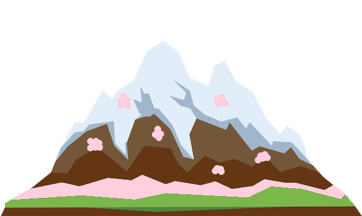
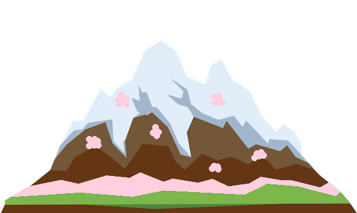
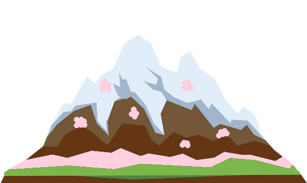
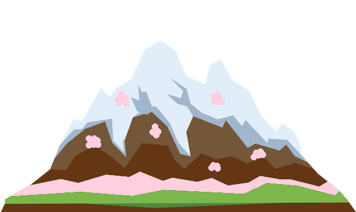

I'm Erjill


Nice to meet you
Hope you're having a good day!
 



Positive: Created a cheery and positive atmosphere throughout campus tours. First day of the job, 2 families went out of their way to find the manager to tell them how considerate, thoughtful and a pleasure I was to have as a tour guide.
Leadership: Leading a team of 4, chairing meetings and organising what agendas that need to be addressed.
Organisation: Setting a time-line of deadlines for each committee member of each task, checking up on each committee with progress and motivating them to do their best in that time.
Intuitive: Created banners for events, initiated collaboration with Insanity Radio and guest starred on a 1 hour talk show. Approached and introduced prospective members and increased membership by 20.
Scrum Development in a team of 8. Implemented an application that manages a day to day Restaurant. Implemented through Java, used tools such as Spring Boot
Programmed a java application that calculates in Reverse Polish and Standard notation. Using TDD and Software Engineering practices such as Checkstyle, Javadoc and SVN.
Collaborated in a team of 4, to create a robot that allows a user to request a cocktail and the robot pours the corresponding ingredients to make the cocktail.
Time Management: Organised time to help out whilst managing degree, society and peer guiding.
Public Speaking: Gave 5 presentations with head of years and advocated ways to further support student’s wellbeing to form tutors. Presented our work in London City Hall on Mental Health Day.
Considerate: Volunteered in a Computer Science class of 30 students. Answered questions, explained concepts through simple examples and breaking it down. Ensured their knowledge was solidified by asking them to do a similar task.
Empathy: Helped out with Disability and Support team with running their clubs in school, helped students feel welcomed and eased.